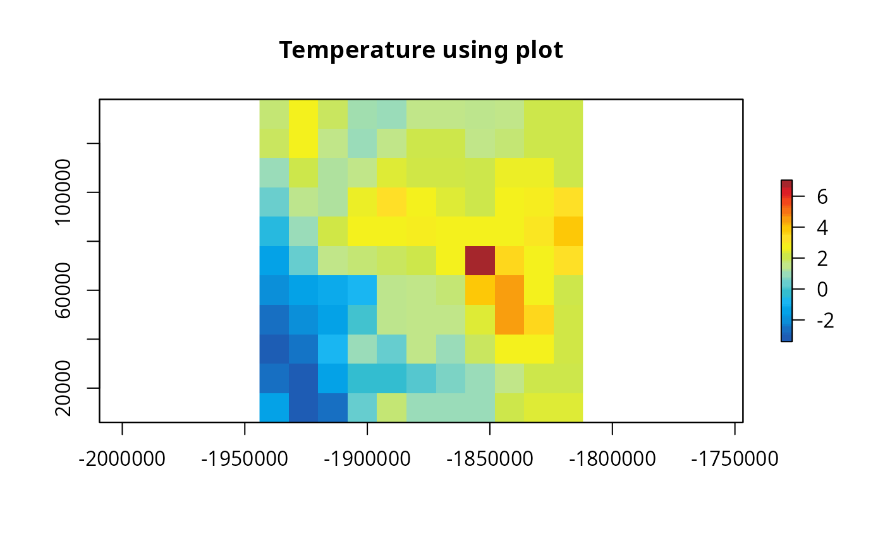
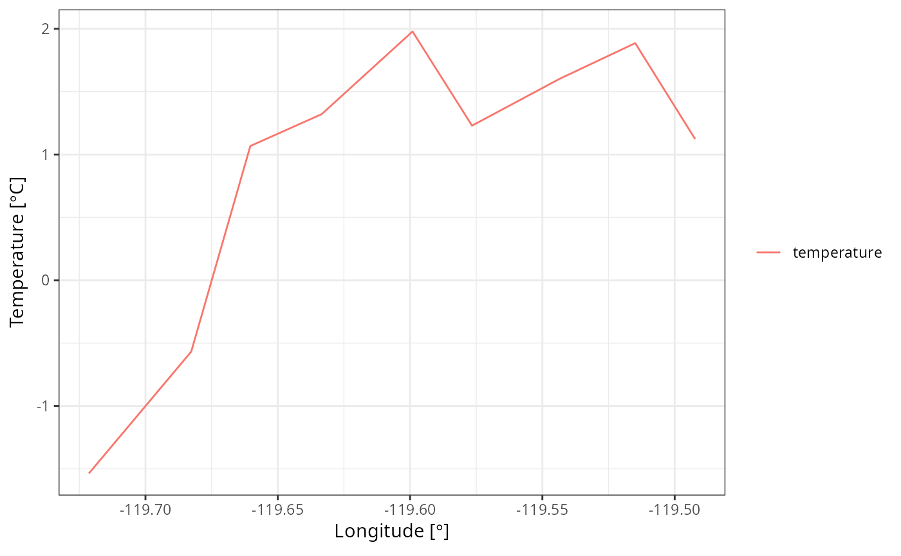

vignettes/gallery3.Rmd
gallery3.RmdBased on this NCL
library(eixport)
library(raster)
#> Loading required package: sp
library(stars)
#> Loading required package: abind
#> Loading required package: sf
#> Linking to GEOS 3.12.1, GDAL 3.8.4, PROJ 9.4.0; sf_use_s2() is TRUE
library(cptcity)
library(sf)
library(vein)
library(ggplot2)Reading Temperature and crop coast lines for our study area
wrfo <- "/home/sergio/R/x86_64-pc-linux-gnu-library/4.3/helios/extras/wrfout_d01_2020-01-01_01%3A00%3A00_sub.nc"
t2 <- mean(wrf_get(wrfo, "T2", as_raster = T))
t2[] <- t2[] -273.15# we select oneFind colour palette for temperature
find_cpt("temperature")
#> [1] "arendal_temperature" "idv_temperature" "jjg_misc_temperature"
#> [4] "kst_03_red_temperature"Let us create a line between c(-46.5,-23.85) and c(-46.35, -23.95)
cx <- as.data.frame(coordinates(projectRaster(t2, crs="+proj=longlat")))
m <- cbind(c(min(cx$x), # xini
max(cx$y)), # xend
c(min(cx$y), # yini
max(cx$y))) # yend
cross = st_linestring(m)
(cross <- st_sfc(cross, crs = 4326))
#> Geometry set for 1 feature
#> Geometry type: LINESTRING
#> Dimension: XY
#> Bounding box: xmin: -120.0101 ymin: 37.72342 xmax: 39.52542 ymax: 39.52542
#> Geodetic CRS: WGS 84
#> LINESTRING (-120.0101 37.72342, 39.52542 39.52542)
plot(mean(t2),
main = "Temperature using plot",
col = cpt("arendal_temperature"))
plot(cross, add = T)
Define a helper function
points_extract <- function(m, sta) {
cross = st_linestring(m)
cross <- st_sfc(cross, crs = 4326)
t2s <- st_as_sf(sta)
lt <- st_intersection(t2s, cross)
geo <- st_geometry(lt)
lt <- st_set_geometry(lt, NULL)
na <- names(lt)
lt$id <- 1:nrow(lt)
dx <- vein::wide_to_long(df = lt,
column_with_data = na,
column_fixed = "id")
stf <- st_sf(dx, geometry = geo)
lt <- st_centroid(stf)
lt <- cbind(lt, st_coordinates(lt))
return(lt)
}
sta = st_as_stars(t2)
sta <- st_transform(sta, 4326)
names(sta) <- "temperature"
df <- points_extract(m, sta = sta)
#> Warning: attribute variables are assumed to be spatially constant throughout
#> all geometries
#> Warning: st_centroid assumes attributes are constant over geometriesLet us check the data
head(df)
#> Simple feature collection with 6 features and 5 fields
#> Geometry type: POINT
#> Dimension: XY
#> Bounding box: xmin: -119.6334 ymin: 38.75301 xmax: -119.4923 ymax: 39.13083
#> Geodetic CRS: WGS 84
#> V1 V2 V3 X Y geometry
#> 1 1.885952 1 temperature -119.5149 39.07052 POINT (-119.5149 39.07052)
#> 2 1.123045 2 temperature -119.4923 39.13083 POINT (-119.4923 39.13083)
#> 3 1.602649 3 temperature -119.5434 38.99434 POINT (-119.5434 38.99434)
#> 4 1.978644 4 temperature -119.5991 38.84526 POINT (-119.5991 38.84526)
#> 5 1.229632 5 temperature -119.5766 38.90559 POINT (-119.5766 38.90559)
#> 6 1.321479 6 temperature -119.6334 38.75301 POINT (-119.6334 38.75301)Add time variable, select and plot
library(ggplot2)
ggplot(df,
aes(x = X, y = V1, colour = V3)) +
labs(y =expression(paste("Temperature [",degree,"C]")),
x = expression(paste("Longitude [",degree,"]")))+
geom_line() +
theme_bw()+
theme(legend.title = element_blank())